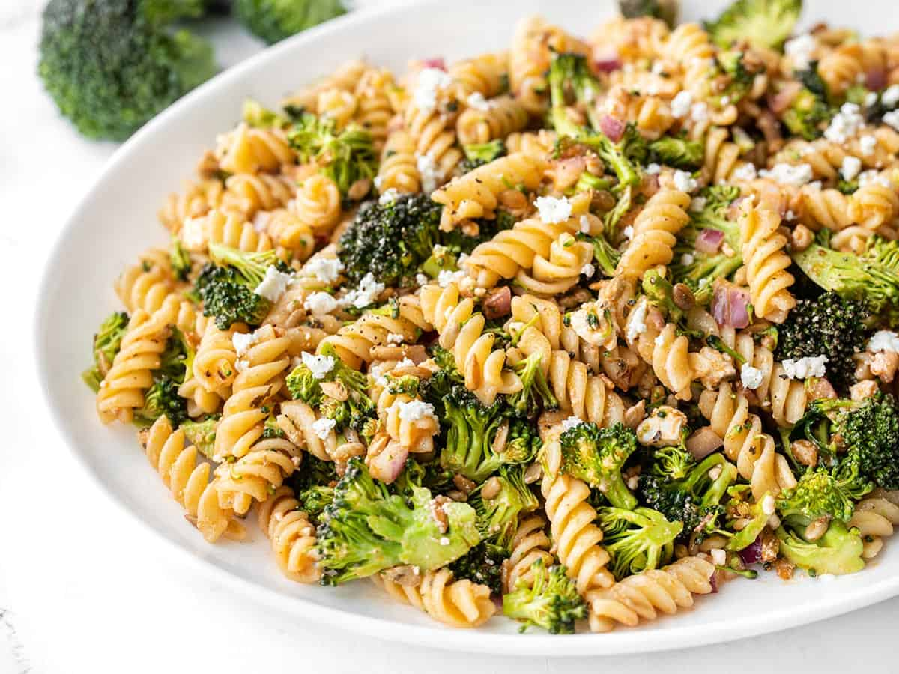
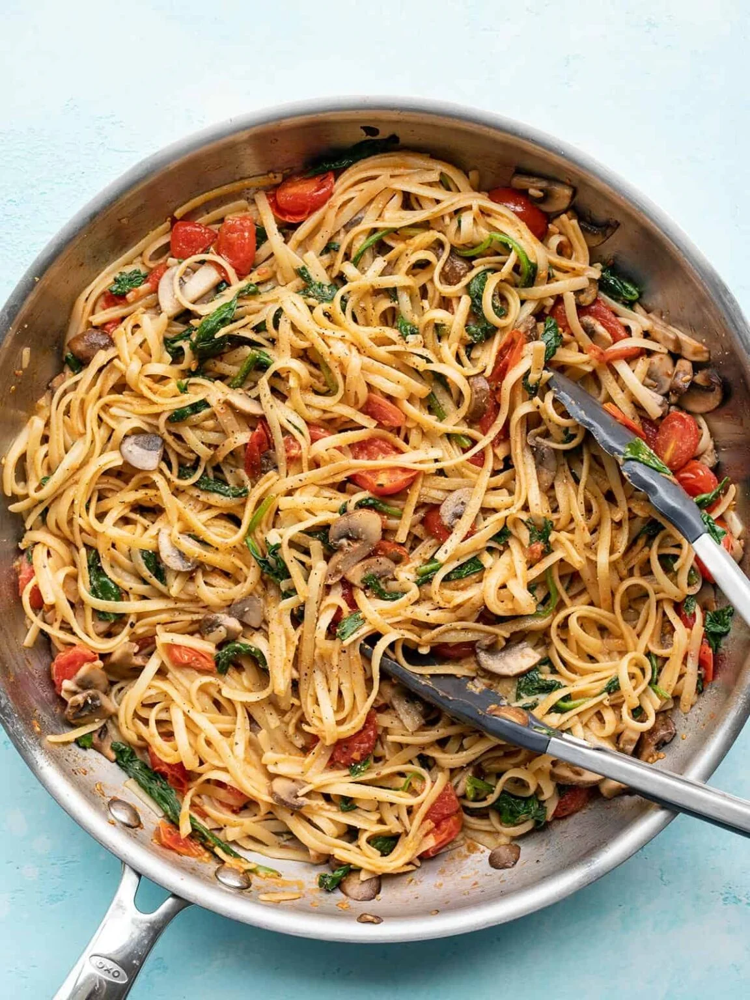

BROCCOLI PASTA SALAD WITH TOMATO VINAIGRETTE
This Broccoli Pasta Salad features a tangy homemade vinaigrette, nutty sunflower seeds, and creamy-salty feta.

by Beth - Budget Bytes
published Apr 21, 2021
SERVINGS
4
PREP
10 minutes
COOK
15 minutes
TOTAL
25 minutes
INGREDIENTS
- 1 Tbsp tomato paste
- 2 Tbsp red wine vinegar
- 1/2 tsp dried basil
- 1/4 tsp garlic powder
- 1/4 tsp sugar
- 1/4 tsp salt
- 1/4 tsp freshly cracked black pepper
- 6 Tbsp olive oil
- 1/2 lb. rotini pasta
- 1 lb. broccoli
- 1/2 cup diced red onion
- 1/4 cup unsalted sunflower seeds
- 4 oz. feta
INSTRUCTIONS
- Prepare the vinaigrette first. Whisk together the tomato paste, red wine vinegar, basil, garlic powder, sugar, salt, and pepper in a bowl until smooth. Begin to whisk in the olive oil, one tablespoon at a time, until fully incorporated. Set the vinaigrette aside.
- Cook the rotini pasta according to the package directions (boil for 7-10 minutes, or until tender). Drain the pasta in a colander. Rinse briefly with cool water to cool off the pasta. Drain well.
- While the pasta is cooking, cut the broccoli florets off the stems, then roughly chop the florets into small, bite-sized pieces. Finely dice the red onion.
- Once the pasta has drained, transfer it to a large bowl. Add the chopped broccoli, red onion, and sunflower seeds. Crumble the feta over top. Drizzle the dressing into the bowl and then gently toss the ingredients until they are evenly combined and everything is coated in dressing. Serve immediately or refrigerate until ready to eat.
-
 Creamy Pesto Chicken Pasta
Creamy Pesto Chicken Pasta -
 Pesto Shrimp Pasta
Pesto Shrimp Pasta -

Quick Veggie Pasta
-
 Broccoli Pasta Salad with Tomato Vinaigrette
Broccoli Pasta Salad with Tomato Vinaigrette -
 Chicken Parmesan Meatballs
Chicken Parmesan Meatballs